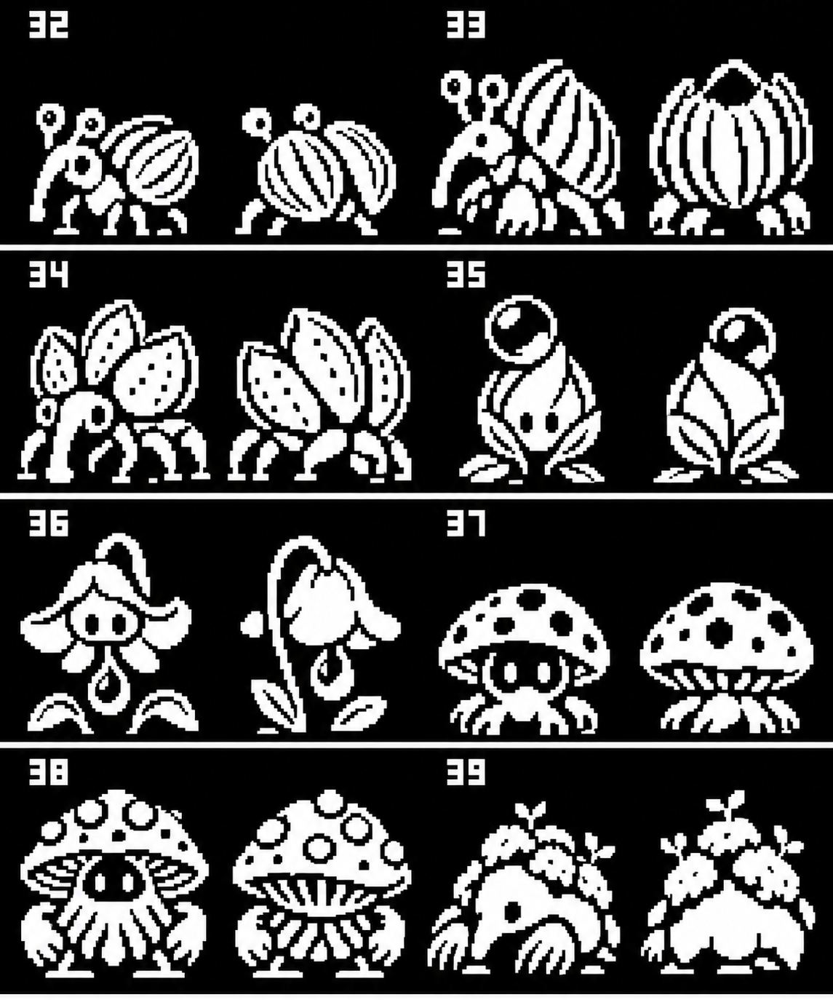
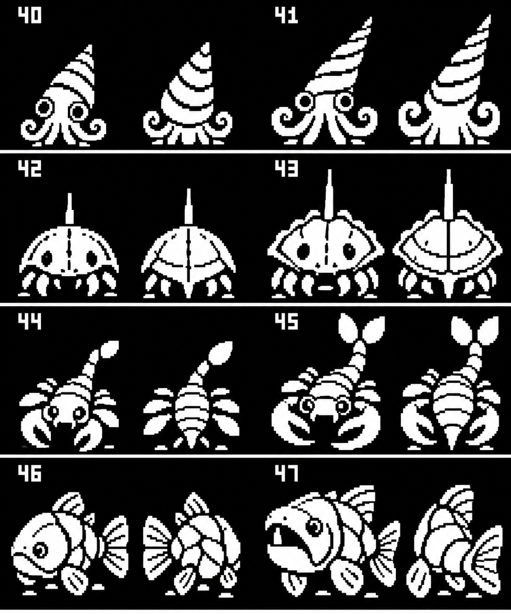
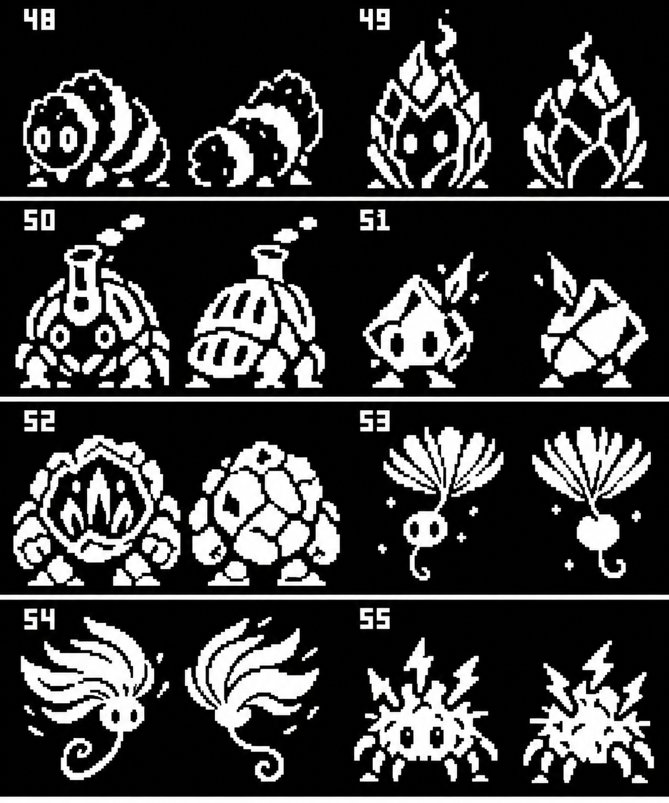
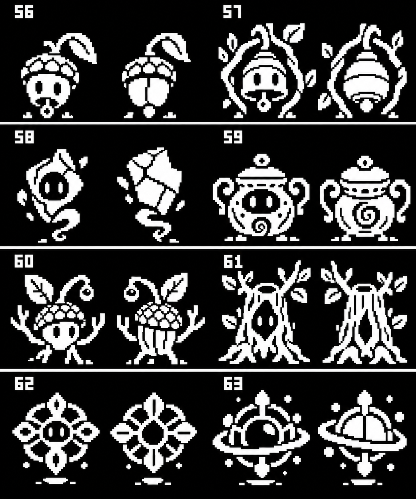

A second gathering roster
32 new creature concepts inspired by the game’s ideas: harvest weevils, growing plants, shoreline fossils, mineral creatures and ancient-grove spirits. Their gathering materials help draw new creatures into lure zones.
Two battle views per creature. Click a board for its full image. Numbers32–63 identify these proposals.
Existing32 creatures · Ideas, sources and proposed families · 32×32 and48×48 sprite exports32–39 · Meadow and harvest

| Creature | Type | Gather | Draw with |
|---|
| 32 NibWeevil | plant | Seed Husk | Ripe seeds |
| 33 HuskWeevil | plant / earth | Dry Husk | Dry husks |
| 34 GranaryWeevil | plant / earth | Grain Dust | Grain bundles |
| 35 DewBud | plant / water | Dew Bead | Dew-soaked leaves |
| 36 NectarBloom | plant / water | Nectar Drop | Flower nectar |
| 37 Sporeling | plant / spirit | Spore Puff | Damp bark |
| 38 SporeKeeper | plant / spirit | Spore Cluster | Spore bundles |
| 39 MossMole | earth / plant | Moss Tuft | Root bundles |
40–47 · Shore and fossils

| Creature | Type | Gather | Draw with |
|---|
| 40 Conelet | water / earth | Shell Flake | Shell fragments |
| 41 SpireSquid | water / elder | Ancient Shell | Fossil pieces |
| 42 Horseshoe | water / earth | Carapace Chip | Shell grit |
| 43 Shieldshoe | earth / elder | Old Carapace | Fossil carapace |
| 44 SiltSkorp | water / earth | Silt Scale | River silt |
| 45 ReefReaper | water / elder | Ancient Scale | Fossil scale |
| 46 Platefin | water / earth | Armor Flake | Mineral shell grit |
| 47 AncientJaw | water / elder | Shed Tooth | Fossil teeth |
48–55 · Minerals and weather

| Creature | Type | Gather | Draw with |
|---|
| 48 CoalGrub | fire / earth | Coal Crumb | Warm charcoal |
| 49 CinderCocoon | fire / earth | Cinder Flake | Warm cinders |
| 50 FurnaceBeetle | fire / earth | Heat Shard | Coal bundles |
| 51 Flintling | earth / lightning | Flint Chip | Flint rubble |
| 52 GeodeGuard | earth / lightning | Crystal Flake | Crystal fragments |
| 53 Tuftling | wind / plant | Seed Fluff | Fluffy seeds |
| 54 GustTuft | wind / plant | Wind Tuft | Seed-fluff bundles |
| 55 StaticMite | lightning / plant | Charged Burr | Dry burrs |
56–63 · Shrines and ancient groves

| Creature | Type | Gather | Draw with |
|---|
| 56 ChimeSeed | spirit / plant | Chime Husk | Hollow seed husks |
| 57 BoughBell | spirit / plant | Resonant Husk | Chime-husk bundles |
| 58 ShardWisp | spirit / earth | Pottery Dust | Weathered pottery |
| 59 Reliquary | spirit / elder | Relic Dust | Ancient pottery |
| 60 SaplingSage | plant / elder | Sap Bead | Fresh sap |
| 61 GroveKeeper | elder / plant | Amber Sap | Sap bundles |
| 62 FossilBloom | elder / plant | Lattice Flake | Fossil fragments |
| 63 OrbitRelic | elder / spirit | Relic Pollen | Lattice fossils |